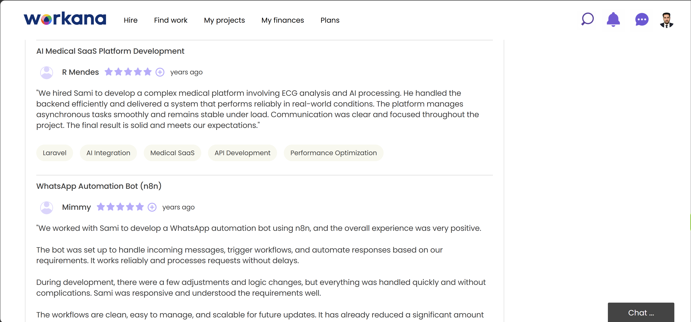

Tech Stack & Tools
PHP / Laravel
Nginx
JavaScript (Vanilla)
MySQL / Redis
AI APIs (ECG + Vision)
AnamNex is built on a robust Laravel PHP backend running on Nginx server for high-performance handling of clinical requests. The platform leverages Laravel's queue system for asynchronous ECG and medical image analysis, Eloquent ORM for managing physicians, patients, and reports, and Redis for caching. Vanilla JavaScript powers the medical exam upload interface (.mat, .hea files, and clinical images), real-time progress indicators, and interactive visualization of AI-generated reports. The platform integrates with proprietary artificial intelligence APIs for cardiac signal interpretation and dermatological image analysis.
My Role
As the lead backend and full-stack developer for AnamNex, I architected and built the entire Laravel application from the ground up. I designed the database schema for physician accounts, patient registration, storage of medical exams (ECG in technical formats .mat/.hea and clinical images), and an AI-generated report system. I implemented the queue worker infrastructure to handle complex ECG analysis and wound/lesion classification without blocking the user interface, ensuring speed even in busy emergency rooms.
I developed RESTful APIs for communication between the JavaScript frontend and AI backends, integrated webhooks for report-ready notifications, and built administrative dashboards for clinic-level usage monitoring. I also implemented automated cleanup scripts for anonymized data after 60 days, email notifications via Laravel Notifications when AI analyses are complete, and optimized Nginx configuration for fast delivery of medical images and PDF reports. My role covered backend architecture, API development, database design, AI service integration, and performance optimization for clinical environments.

Client Review

Complete Case Study
30s
Average ECG analysis time from upload to AI-generated report
98%
Sensitivity in arrhythmia detection (validated with clinical datasets)
4+
Medical image types supported: ECG traces, wounds, skin lesions, dermatology
60 days
Data retention & anonymization policy for patient privacy compliance
AnamNex is a complete medical SaaS platform developed to support emergency physicians (plantonistas) in daily clinical practice, using artificial intelligence applied directly to point-of-care decision making. The platform focuses on speed, diagnostic accuracy, and centralization of clinical information in a single secure and intuitive environment.
🔹 Automated ECG reading with AI: The system performs automatic analysis of electrocardiograms (ECG), processing technical files (.mat, .hea) as well as ECG images. The artificial intelligence interprets cardiac signals and automatically generates a clinical report, helping to identify arrhythmias, electrical alterations, and relevant cardiac patterns — optimizing shift decision-making.
🔹 Medical image analysis with AI (wounds, lesions, dermatology): The platform allows clinical image upload for automated analysis. Using computer vision models, AnamNex classifies wound types, skin lesions, and dermatological conditions, providing structured descriptions and severity triage suggestions. This feature is particularly valuable for emergency rooms, wound care, and dermatology support.
The client needed a scalable, high-performance web application capable of handling asynchronous AI model inference for both ECG signal processing and medical vision tasks, while maintaining medical data privacy and delivering fast, actionable insights. I built the platform using Laravel on Nginx, with a vanilla JavaScript frontend for dynamic interactions. The backend manages physician authentication, patient-episode linking, queue jobs for AI analysis, and secure API integrations with specialized medical AI services.
One key challenge was processing .mat and .hea technical ECG files — raw signal data — requiring custom parsing libraries integrated with Laravel's filesystem. I built dedicated service classes to transform physiological signals into tensors consumable by the AI inference engine. Another challenge was maintaining sub‑30 second turnaround for ECG reports even under peak ER loads. I implemented Laravel's queue system with Redis and Horizon to process analyses asynchronously, sending real-time browser notifications via Laravel Echo (Pusher) when a report is ready. For data compliance, I built automated scheduled commands to irreversibly anonymize patient data after 60 days of inactivity, keeping the system GDPR and LGPD (Brazilian data protection) ready.
After launch, AnamNex successfully processes hundreds of daily ECG analyses and dozens of dermatological image classifications per clinic. Emergency physicians report significant time savings — no more manual transcription of ECG findings or searching for dermatology references. The platform continues to expand, with additional medical image types (X‑ray, CT) being integrated via the same Laravel-based microservices architecture.

Platform Walkthrough: ECG → AI Report → Clinical Decision
Platform Features and Highlights
Automated ECG Analysis
Reads .mat, .hea technical files + images — arrhythmia detection & full clinical report
Wound & Lesion Classification
AI-powered analysis of dermatological images with severity triage suggestions
Real-time Notifications
Laravel Echo + Pusher — physicians get instant alerts when reports are ready
Medical Data Privacy
60-day anonymization policy · LGPD/GDPR ready · End-to-end encryption for exams
Queue-based Async Processing
Laravel Horizon + Redis — handles peak ER loads without UI blocking
EHR Integration Ready
HL7 / FHIR compliant export — structured reports for hospital information systems
Future Improvements
X-ray & CT Support
Extend AI vision models to chest X-rays and emergency CT scans (pneumothorax, fractures)
Multilingual Reports
Automatic translation of clinical reports (English, Spanish, Portuguese) for medical tourism
Predictive Triage Dashboard
Real-time risk scoring for incoming ECGs — flag STEMI/high-risk arrhythmias first
Mobile Offline Mode
PWA with local-first storage for rural clinics with intermittent internet
Planned enhancements include expanding AI models to cover X-ray and CT emergency findings, implementing a predictive triage dashboard that flags critical ECG patterns in real-time, adding multilingual report generation for international hospital groups, and developing a progressive web app (PWA) with offline support for remote clinics. The Laravel-based architecture makes these additions seamless through modular service providers and event-driven design.